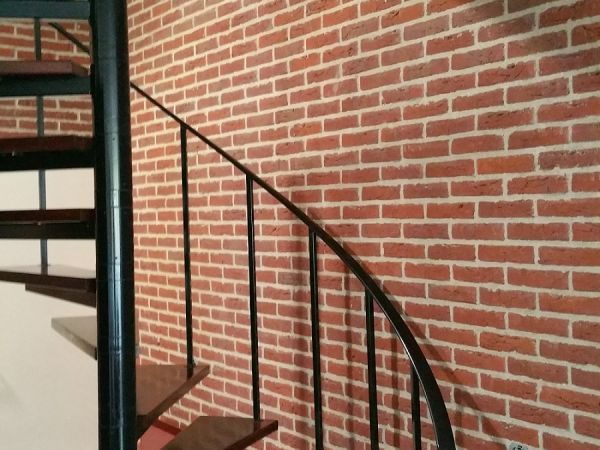
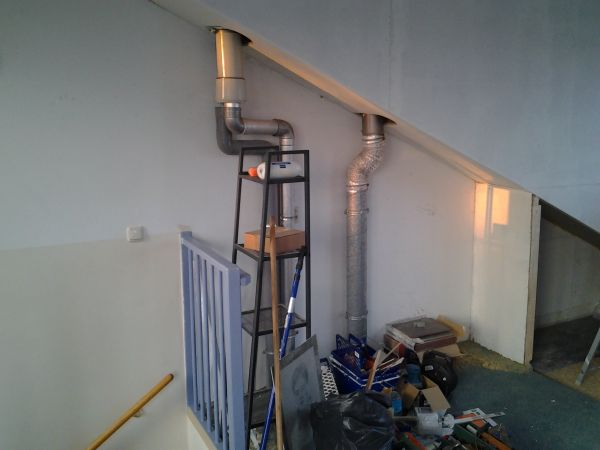
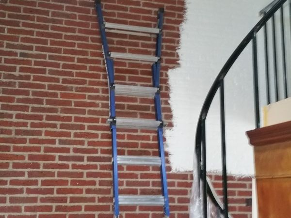
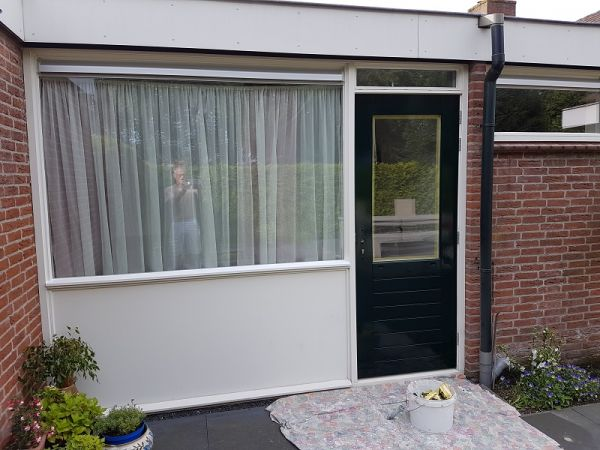
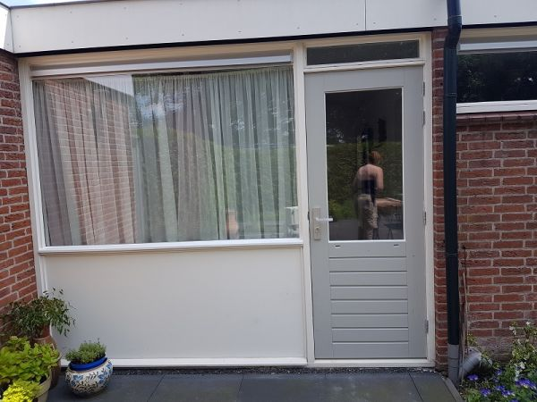

Allround klusser in Culemborg
Twee
rechterhanden
aan uw huis.
Een klein klusbedrijf dat meedenkt. U weet vooraf wat er gebeurt, betaalt geen voorrijkosten en elke dag laten we de klus schoon achter.
4 van 5 sterren uit 8 Google-reviews

Uw partner voor elke klus.
Arno werkt kleinschalig en met professionele materialen. Met vakkennis en een creatieve blik zoekt hij naar een oplossing die werkt, voor een eerlijke prijs.
Advies en duidelijke afspraken vooraf
U weet wat er gebeurt, wanneer, en wat het kost.
Creatieve oplossingen voor elke klus
Ook als de ruimte scheef, klein of lastig is.
Elke dag schoon achtergelaten
Na elke werkdag ligt alles weer netjes.
Geen voorrijkosten, aantrekkelijke prijzen
U betaalt voor het werk, niet voor de rit.
"Altijd goed om iemand voor een klus in huis te hebben die vooraf aangeeft wat hij gaat doen en dat dan ook daadwerkelijk doet."
"Je dankte ons voor het vertrouwen in jou, maar dat we je zonder zorg alleen aan de gang lieten gaan zegt ook over jou meer dan genoeg!"

Waar een standaardoplossing niet past.
Arno is gespecialiseerd in maatoplossingen voor lastige ruimtes. Een kleine badkamer die toch prettig moet zijn. Kastruimte onder een schuine wand. Een zolder die eindelijk bruikbaar wordt.
- (Kleine) badkamers
- Nieuw plaatsen of renoveren, toilet inbegrepen.
- Onder schuine wanden
- Kastruimte op maat, tot in de hoek.
Alles wat Arno voor u doet.
Staat uw klus er niet tussen? Bel even, dan hoort u meteen of Arno u kan helpen.
Toilet & badkamers
Nieuw plaatsen en renoveren
Kastwanden op maat
Ook onder schuine wanden
Keukens & kantines op maat
Wanden, sierpleisters & stucwerk
Laminaat & parket
Schilderen & behangen
Dakramen & deuren
Waaronder deuren afhangen
Beveiliging
Tuinen aanleggen & onderhouden
Uit het werk.


Tijdens de klus

Opgeleverd
"Arno heeft twee rechterhanden, denkt met je mee en weet voor elk probleem een oplossing aan te dragen."
"Arno brengt heldere offertes uit met een redelijke prijs voor het uit te voeren werk en hij houdt zich aan de gemaakte afspraken. Ook als drie maanden na oplevering nog iets moet worden aangepast komt hij langs en werkt het af."
Wat klanten op Google zeggen.
4 van 5 uit 8 reviews
★★★★★
"Arno Geerlings staat voor vakmanschap en kwaliteit van A tot Z."
"Tussen september 2022 en begin januari 2023 heeft Arno diverse grote klussen aan onze woning uitgevoerd. Van precisiesloopwerk tot het aanleggen van nieuwe plafonds, vernieuwing van elektra over twee verdiepingen, leidingwerk voor de keuken, stucwerk, ..."
★★★★★
"Prettige samenwerking, alles volgens afspraak uitstekend afgewerkt binnen het tijdplan. Er wordt in oplossingen gedacht en hij lost pro actief problemen op. Wij zijn héél erg blij met het uiteindelijke resultaat."
★★★★★
"Super adres! Betrouwbaar, betaalbaar en deskundige meedenker"
Vertel Arno over uw klus.
Vraag een vrijblijvende offerte aan. Bel, mail of stuur hieronder een bericht.
0345 517 196- Geen gehoor? Mobiel
- 06 502 327 55
- Adres
- Beatrixstraat 45, 4101 HJ Culemborg